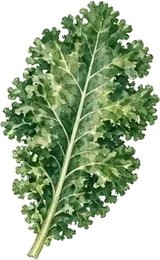

Knowledge Hub
Everything from the club knowledge base in one searchable place: clay-soil rules, no-dig, frost dates, the monthly calendar, crop guides, pests and local allotments. See also Monthly Jobs and Growing Tips.
About the club
- Your Gardening Association is example text for a local club in Yourtown. Membership in this example is £5 per year. Meetings: Wednesdays 7.30pm at Your Venue. Add your own contact details on the Join page.
Clay soil
- Heavy clay is fertile but cold in spring, bakes and cracks in summer, and holds winter water. Change this note if your soil is different.
- Never work it wet. If it sticks to boots and tools, leave it.
- Feed from the top with bulky organic matter (well-rotted compost or manure).
- Do not add sand to heavy clay – it can set like concrete.
- Raised beds and no-dig improve drainage and stop trampling.
- Mulch permanent plants (rhubarb, fruit, roses) to stop summer cracking.
No-dig method
- No routine digging. Cover the ground each year with well-rotted organic matter (at least 5 cm / 2 in). Worms and fungi do the work.
- Starting a new bed: remove perennial weeds, then overlapping cardboard, then 10–15 cm of compost. Plant straight in.
- Keep beds about 4 ft (1.2 m) wide so you can reach the middle without treading.
Frost and timing (example for Yourtown)
- Example only: last spring frost late April or early May. Practical plant-out date for tender crops is the end of May. Change these dates for your own area.
- Example first autumn frost: early to mid November.
- Tender crops (tomatoes, courgettes, beans, squash): late May in a normal year. Always check the forecast.
Monthly jobs
- January: Plan beds. Order seeds. Clean tools.
- February: Sow indoors. Do not walk on wet clay.
- March: Sow hardy seeds under cover. Start tomatoes indoors.
- April: Main outdoor sowing. Keep fleece ready.
- May: Plant out tender crops late in the month. Net brassicas.
- June to August: Harvest, water fruiting crops, sow follow-on salads.
- September to October: Clear beds, plant garlic, mulch.
- November to December: Protect tender plants, plan next year. See the Monthly page for the full list.
Crop notes
- Potatoes: Chit in late winter. Do not leave the crop sitting in wet clay.
- Brassicas: Net against pigeons and cabbage whites.
- Tomatoes: Sow indoors in March. Plant out after the last frost. Water at the roots.
- Beans and peas: Peas from March. Runner and French beans after the last frost.
- Courgettes: One or two plants are usually enough.
Pests
- Slugs: Worst on wet clay. Pick them off, use traps, and lift potatoes promptly.
- Aphids: Squash colonies and pinch broad bean tips once pods set.
- Blight: Warm wet weather. Space plants out and water at the roots. Check a blight forecast before you spray anything – many garden products are not for home use.
- Pigeons: Net brassicas with taut netting.
Example allotments
- North Field Allotments – example traditional plots. Replace this with your own site.
- Yourtown Community Beds – example shared beds.
- South Meadow Plots – example no-dig site.
Group seed purchase
- The members area has an example seed list. The members discount is set in seed-catalogue.js (memberDiscountPercent). Plants stay at list price.
- Print a summary and hand it to your seed organiser. The name of that person is also set in seed-catalogue.js. Demo – no payment is taken online.
Sharing produce, plants and seeds
- Bring labelled surplus to a meeting. Only healthy plants and viable seed. Take a little, leave some for others.
- A separate noticeboard is not included. Add your own link on the members page if you want one (search that file for MEMBERS BOARD).